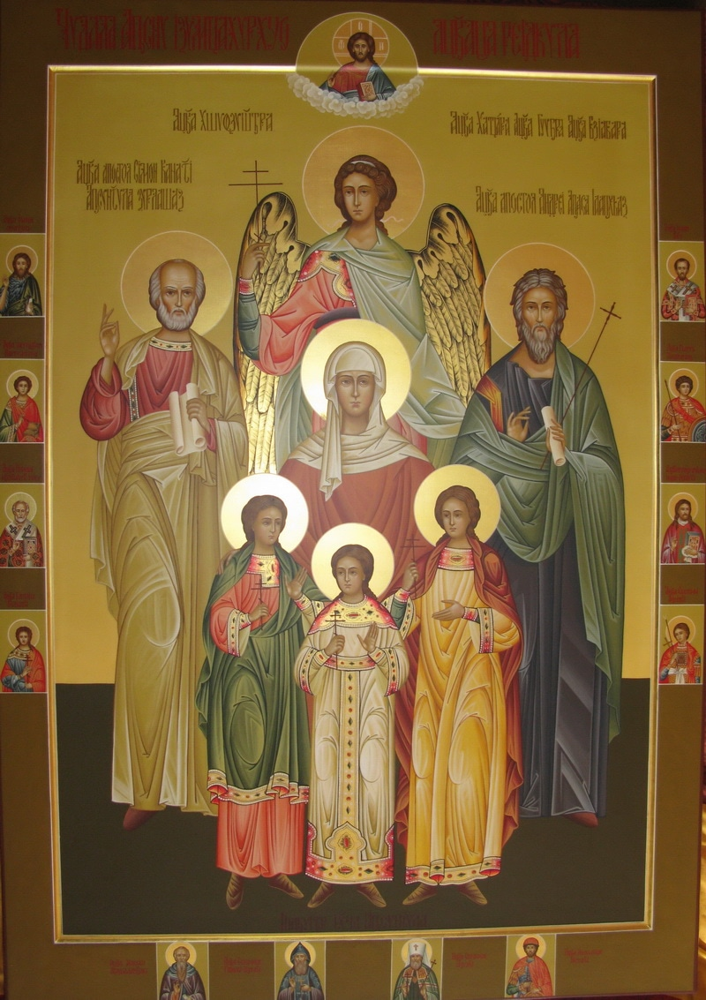
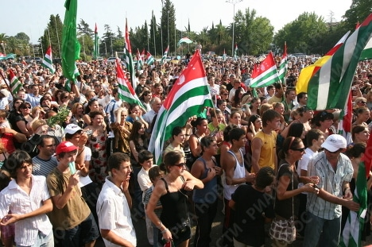

30 09 2011 (2052 дня 19 часов назад)

День Независимости Абхазии — главный
праздник всего народа Абхазии

В Абхазии нет практически ни одной семьи, где бы этот праздник не отмечали со слезами на глазах. День независимости Абхазии 30 сентября – один из любимых праздников абхазского народа. Это событие знаменует освобождение Сухуми от грузинских войск в 1993 году и окончание абхазско-грузинской войны. Бои за столицу Абхазии продолжались 11 дней и завершились операцией на площади перед домом правительства. Сегодня она именуется Площадь Свободы. После освобождения Сухуми, 28 сентября, у границы Гульрипшского и Очамчирского районов, соединились Западный и Восточный фронт Абхазии. Вся территория страны была освобождена от оккупантов 30 сентября 1993 года. Сегодня День независимости 30 сентября отмечают с двояким чувством: радостью и печалью. Практически каждая семья Абхазии в ходе гражданской войны потеряла кого-то из своих близких. В День независимости Абхазии по всей стране устраивают концерты, народные гуляния, проводят спортивные мероприятия, приуроченные к знаменательной дате. По Площади Свободы в Сухуми проходит военный парад с участием военной техники различного назначения, военнослужащих и курсантов военных училищ. К Мемориалу Славы и другим могилам, где покоятся погибшие защитники отечества во время войны 1992 – 1993 гг., возлагаются цветы и венки. Кульминацией праздника является праздничный салют.